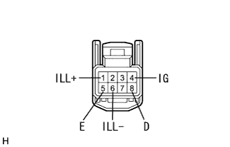
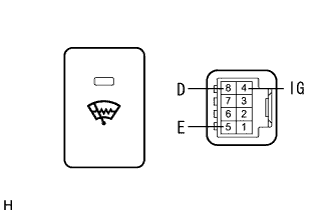

Front Wiper Deicer Switch On-vehicle Inspection |
| 1. Inspect Front Wiper Deicer Switch |
Inspect vehicle wire harness
Disconnect the front wiper deicer switch connector.
 |
Using SST (Toyota electrical tester), measure the voltage between each terminal of the vehicle side wire harness connector.
| Inspection Terminal (Terminal Symbol) | Condition | Standard |
|---|---|---|
| 1(ILL+) - 6(ILL-) | Headlight dimmer switch (light control switch) OFF → TAIL | 1V or less → 11 to 14 V |
| 8(D) - 5(E) | IG ON | 11 to 14 V |
| 4(IG) - 5(E) | IG ON | 11 to 14 V |
Using SST (Toyota electrical tester), measure the resistance between each terminal of the vehicle side wire harness connector.
| Inspection Terminal (Terminal Symbol) | Condition | Standard |
|---|---|---|
| 6 (ILL-) - Body ground | Always | Below 1 Ω |
| 5 (E) - Body ground | Always | Below 1 Ω |
Operation Check
Connect the front wiper deicer switch connector.
 |
Using SST (Toyota electrical tester), measure the voltage of each terminal of the connector.
| Inspection Terminal (Terminal Symbol) | Condition | Standard |
|---|---|---|
| 8(D) - 5(E) | IG ON, front wiper deicer switch OFF → ON | 1V or less → 11 to 14 V (1V or less after 15 ±3 minutes) |
| 4(IG) - 5(E) | IG ON, front wiper deicer switch OFF → ON (when pushed in) | 11 to 14 V → 1V or less |
Indicator Illumination Inspection
Turn IG ON.
Check that the indicator comes on when the front wiper deicer switch is turned ON, and goes off after 15 ±3 minutes.
Illumination Inspection
Turn IG ON.
Check that the illumination indicator comes on when the headlight dimmer switch is turned from OFF to TAIL.